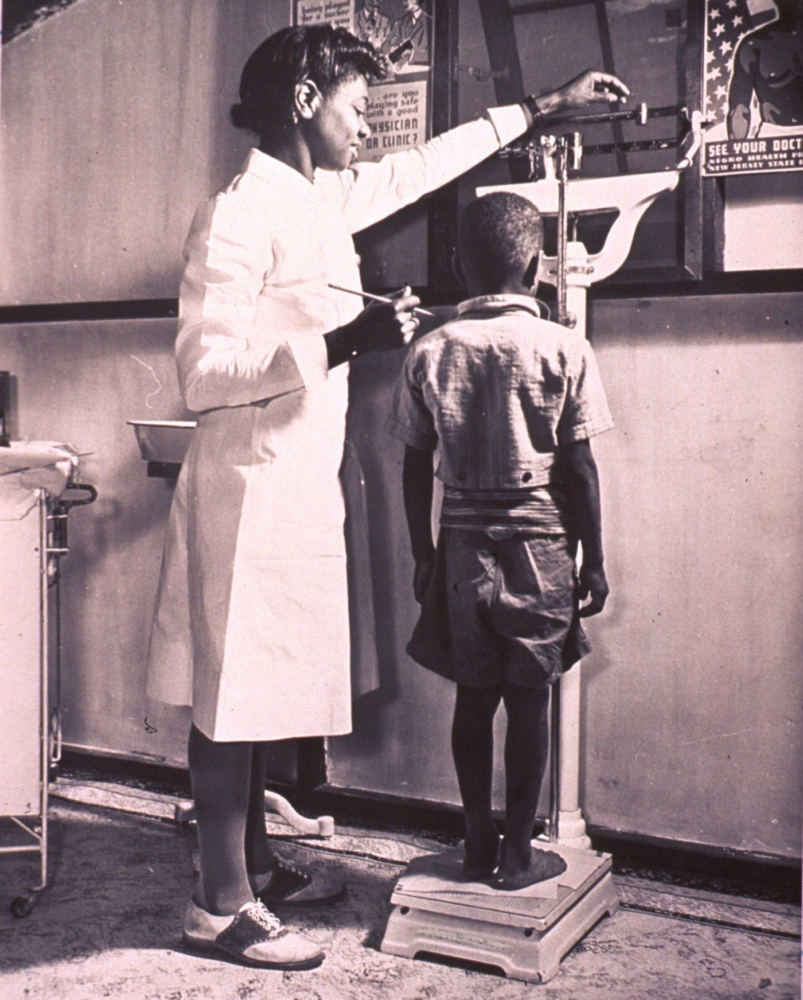

Na mesma consulta da Manu, a mãe trouxe uma segunda preocupação: a outra filha, a Maju (irmã gêmea), que ela acha "muito gordinha". Trouxe peso e altura objetivos — então dá para classificar. Os números fecham o caso mais à frente.
Maju: a irmã da Manu que a mãe acha "gordinha"
A segunda dúvida da mesma consulta
A consulta da Manu não terminou na avaliação da baixa estatura. Na mesma sala, a mãe trouxe uma segunda preocupação — desta vez sobre a outra filha, a Maju, irmã gêmea da Manu. A queixa veio em palavras simples: a mãe quer saber por que a Maju está "tão gordinha". É uma das perguntas mais comuns do ambulatório de pediatria — e, como toda queixa de peso, não se responde no olho. Se há uma filha que veio por ser baixa demais e outra que vem por parecer pesada demais, as duas pontas dos distúrbios do crescimento se encontram na mesma família.
O que resolve a queixa: peso, altura e o IMC
A boa notícia é que a mãe trouxe dados objetivos de peso e altura da Maju. Com peso e estatura na mão, não se fica no "acho que está gordinha": calcula-se o índice de massa corporal (IMC) — e muitas vezes essa conta é feita à mão, ali mesmo. É a partir desse número que se classifica o distúrbio nutricional da criança e se decide se há, de fato, um problema ou não. Guarde a lógica: a queixa é subjetiva ("gordinha"), mas a resposta é numérica (IMC plotado na curva). Os números da Maju vão fechar o caso mais à frente.
Onde a Maju entra: o último distúrbio do crescimento
O quadro em foco aqui é o de obesidade — o último dos distúrbios relacionados ao crescimento. Depois de reconhecer a baixa estatura (a história da Manu) e a desnutrição, fecha-se o ciclo com a outra ponta da balança: a criança que ganha peso demais para o tamanho dela. A Maju é o caso que vai amarrar tudo — peso, altura, IMC, classificação por faixa etária — e mostrar, no fim, que o mesmo número pode significar coisas diferentes dependendo de quem o lê e da idade de quem o carrega.
Clique, toque ou Tab + Enter; cada dado revela seu papel no raciocínio.

Quiz fixação
Ancoragem do raciocínio: a queixa subjetiva que se resolve por número.
-
A mãe diz que a Maju está "muito gordinha". Qual é a conduta correta para responder objetivamente a essa queixa?
Por que cada alternativa:
- A) Decide pela ectoscopia: julgar "no olho" é justamente o erro que este raciocínio desmonta — a impressão visual não fecha nem afasta obesidade. Por que cair na A: confunde-se "parecer" com "ser", ignorando que o corte é numérico.
- B) Certa. A virada do raciocínio inteiro está aqui: obesidade é diagnóstico numérico. A queixa subjetiva ("gordinha") só se resolve com peso, altura e IMC plotado na curva por idade — é o dado objetivo que classifica e diz se há ou não distúrbio.
- C) Pula etapas: lipidograma e glicemia são investigação de comorbidade — entram depois de classificar e em faixas etárias próprias (lipidograma > 2 anos), não como primeiro passo. Por que cair na C: antecipa-se a investigação de comorbidade ao lugar do diagnóstico.
- D) Terceiriza o raciocínio: a classificação inicial é do próprio pediatra, com peso/altura/IMC — encaminhar sem avaliar inverte a ordem. Por que cair na D: troca-se a conduta básica por uma referência precoce.
-
A partir de quais dados se calcula o IMC e se classifica o distúrbio nutricional da Maju?
Por que cada alternativa:
- A) Usa só metade da conta: peso isolado não dá IMC nem classifica — sem a estatura ao quadrado no denominador, o número não existe. Por que cair na A: simplifica-se o IMC a "quanto a criança pesa".
- B) Certa. O IMC se calcula com peso e estatura (peso ÷ estatura²); é esse número, plotado na curva por idade, que classifica o distúrbio nutricional. Os dados objetivos que a mãe trouxe são exatamente o que basta para classificar.
- C) Acrescenta um dado de etapa posterior: a circunferência abdominal entra na síndrome metabólica (> 10 anos), não no cálculo do IMC. Por que cair na C: mistura-se um parâmetro de comorbidade com a fórmula básica.
- D) Recai na ectoscopia: impressão clínica não calcula IMC — é o oposto do dado objetivo. Por que cair na D: volta-se a julgar no olho.